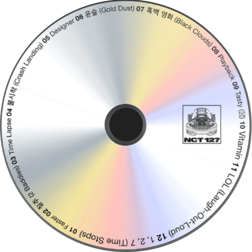
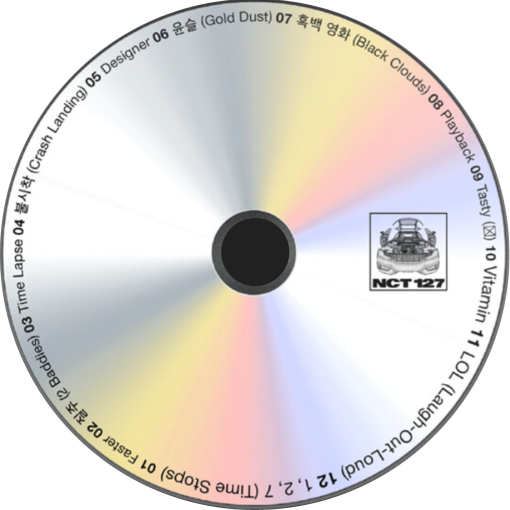

잘자내달빛이리와서안겨깊숙이밤이수놓인잔물결로누워아마너는모르지얼마나네빛예쁜지금세잔뜩닿아반짝이잖
니금색길을내어나를빛내지널 만나기전엔그저어두웠지칠흑같은바다밑을본적있니?일렁이는굴표정없는매일괜히
흘러갈뿐기대없던내일그런어느날 내위로쏟아지던은하수안녕하고선빤히날바라보는눈망울(oh, ooh)그제야눈치
챘어손에물든빛별이뜬게아냐,이건너야짙은밤내게와서너를새기던길금빛이된 바다달이떴네시간이멈춘것같았던
그즈음(oh-ohoh)단번에널떠올리곤(oh-oh-oh,ah,ah)이게사랑일까해?(이게사랑일까해?)잘자내달빛이리와서안
겨깊숙이밤이수놓인잔물결위로누워아마너는모르지얼마나 네빛이예쁜지그므세잔뜩닿아반짝이잖니금색길을내어
나를빛내지물기어린내음고갤들게해어김없이생긋웃어주는,너,나나왜일까네게서바다향이?어젯밤나에게묻은건
지코끝을맴네,giveittome,giveittomeOoh,오늘도다시올까?소란한그빛벌써스러져가아득한데감은눈뜨면순간너
와하늘이길금빛길을따라네게갈게(yeah)잘자내달빛이리와서안겨깊숙이(찬란한밤)밤이수놓인잔물결위로누워
(잔물결위로누워)아마너는모르지얼마나네빛이예쁜지그므세잔뜩닿아반짝이잖니(ooh)금색길을내어나를빛내지무
한하게반짝여넌,like magic그환함에전부다잊어,badthings그런너를좋아해,이미알지꿈에서도아른거리는달빛
Oh-ah,oh-ah어디한번물어봐파도위에손대봐고요하던물결이요동치는것을봐오직널향해흘러,그중력의힘에내바
다가다말라도잘자내달빛이리와서안겨깊숙이(oh-oh)밤이수놓인잔물결위로누워(잔물결위로누워,whoa)아마이
제알겠지(이제알겠지)얼마나네빛이예쁜지(oh-oh)금세잔뜩닿아반짝이잖니(ah,ah)금색길을내어나를빛내지
(ooh,whoa)Golddustup mysea금색가룰뿌려찬란히밤이수놓인잔물결위에 뿌려아마이제알겠지얼마나네빛이예
쁜지금세잔뜩닿아반짝이잖니금색길을내어나를빛내지잘자내달빛이리와서안겨깊숙이밤이수놓인잔물결위로누워
아마너는모르지얼마나네빛이예쁜지금세잔뜩닿아반짝이잖니금색길을내어나를빛내지널만나기전엔그저어두웠지
칠흑같은바다밑을본적있니?일렁이는얼굴표정없는매일괜히흘러갈뿐기대없던내일그런어느날내위로쏟아지던은
하수안녕하고선빤히날바라보는눈망울(oh,ooh)그제야눈치챘어손에물든빛별이뜬게아냐,이건너야짙은밤내게와
서너를새기던길금빛이된바다달이떴네시간이멈춘것같았던그즈음(oh-oh-oh)단번에널떠올리곤oh-oh-oh,ah,
ah이게사랑일까해?(이게사랑일까해?)잘자내달빛이리와서안겨깊숙이밤이수놓인잔물결위로누워아마너는모르
지얼마나네빛이예쁜지금세 잔뜩닿아반짝이잖니금색길을내어나를빛내지물기어린내음고갤들게해어김없이생긋웃
어주는,너,나나왜일까네게서바다향이?어젯밤나에게묻은건지코끝네,giveittome,giveittomeOoh,오늘도다시올
까?소란한그빛벌써스러져가아득한데감은눈뜨면순간너와하늘이길금빛길을따라네게갈게(yeah)잘자내달빛이리
와서안겨깊숙이(찬란한밤)밤이수놓인잔물결위로누워(잔물결위로누워)아마너는모르지얼마나네빛이예쁜지금세
잔뜩닿아반짝이잖니(ooh)금색길을내어나를빛내지무한하게반짝여넌,likemagic그환함에전부 다잊어,badthings
그런너를좋아해,이미알지꿈에서도아른거리는달빛Oh-ah,oh-ah어디한번물어봐파도위에손대봐고요하던물결이
요동치는것을봐오직널향해흘러,그중력의힘에내바다가다말라도잘자내달빛이리와서안겨깊숙이(oh-oh)밤이수놓
인잔물결위로누워(잔물결위로누워,whoa)아마이제알겠지(이제알겠지)얼마나네빛이예쁜지(oh-oh)금세잔뜩닿아
반짝이잖니(ah,ah)금색길을내어나를빛내지(ooh,whoa)Golddustupmysea금색가룰뿌려찬란히밤이수놓인잔물
결위에뿌려아마이제알겠지얼마나네빛이예쁜지금세잔뜩닿아반짝이잖니금색길을내어나를빛내지잘자내달빛이
리와서안겨깊숙이밤이수놓인잔물결로누워아마너는모르지얼마나네빛예쁜지금세잔뜩닿아반짝이잖니금색길을내
어나를빛내지널 만나기전엔그저어두웠지칠흑같은바다밑을본적있니?일렁이는굴표정없는매일괜히흘러갈뿐기대
없던내일그런어느날내위로쏟아지던은하수안녕하고선빤히날바라보는눈망울(oh,ooh)그제야눈치챘어손에물든빛
별이뜬게아냐,이건너야짙은밤내게와서너를새기던길금빛이된 바다달이떴네시간이 멈춘것같았던그즈음(ohohoh)
단번에널떠올리곤(oh-oh-oh,ah,ah)이게사랑일까해?(이게사랑일까해?)잘자내달빛이리와서안겨깊숙이밤